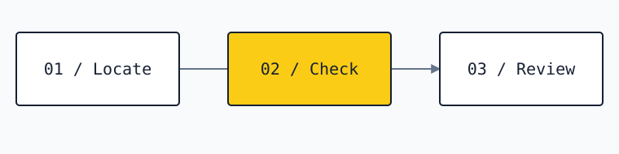

Urbot
A guided workspace for urban-planning checks and case review.
- My work
- Application and workflow development
- Project focus
- Guided intake · Rules · Review
The project
I’m developing Urbot as an internal tool for NMarq: a guided workspace for urban-planning checks, case tracking, and consultation through MCP.
What I’m building
The application combines a React interface with a Worker API and a deterministic rules engine. It brings location, project details, evidence, and review status into one workflow.
- React
- Cloudflare Workers
- D1 + R2
- MCP
- Rules engine
From project to review

Inside the workflow
1. Locate
Start with the site and its context: mapping, address search, and cadastral comparison support the guided intake.
2. Check
Project details feed a deterministic evaluation across seven review layers. Evidence stays attached to the case.
3. Review
Pending or conditional layers remain visible. A reviewer must resolve them before the case can be professionally validated.
Review boundaries
Professional validation remains a separate reviewer action, and incomplete sources stay visibly under review.